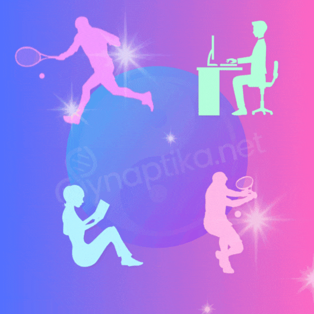

Comment la curiosité stimule l'innovation
Votre cerveau est un organe incroyablement flexible et complexe, surpassant même les ordinateurs les plus sophistiqués.
En le nourrissant correctement et en lui offrant un environnement sain, vous pouvez améliorer significativement vos capacités cérébrales.
Plutôt que de vous laisser emporter par la malbouffe et les médias, optez pour une alimentation riche en nutriments qui favorisent la neuroplasticité, tout en pratiquant une activité physique régulière pour stimuler votre cerveau.
L'image d'un jardin luxuriant illustre bien les besoins de votre cerveau : eau, soleil, et un sol fertile, tout comme il a besoin de bonnes graisses, antioxydants et vitamines.
Il faut 40 minutes à un superordinateur pour simuler une seule seconde d'activité cérébrale.
La mémoire de votre cerveau, flexible et liée à des associations, surpasse les ordinateurs avec leurs emplacements de stockage fixes en termes de créativité et d'adaptabilité.
Vos capacités cérébrales peuvent s'améliorer de manière significative si vous les utilisez correctement... et surtout en leur offrant des conditions SAINES.
Vous pouvez toujours vous goinfrer de fast-food et rester hypnotisé par les médias ou bien...
Vous pouvez choisir de nourrir votre esprit et votre corps avec des aliments riches en nutriments, qui soutiennent la neuroplasticité, favorisant une meilleure concentration et une mémoire améliorée.
Il a besoin d'eau, de soleil et d'un sol fertile tout comme il a besoin de bonnes graisses, d'antioxydants et de vitamines.
L'exercice physique, bien au-delà des casse-têtes, est crucial pour la santé cérébrale, augmentant même la taille de certaines parties du cerveau liées à la mémoire et à l'apprentissage.
En plus d'une alimentation équilibrée et de l'exercice, des éléments comme un sommeil adéquat, la réduction du stress, l'amélioration de l'attention, le partage d'émotions, et l'augmentation de la matière grise dans différentes régions cérébrales sont essentiels pour un cerveau en pleine forme.
Prendre soin de votre cerveau est primordial, car il orchestre chaque aspect de votre vie.
La science tend à valider que l'activité physique régulière peut augmenter la taille de l'hippocampe, la partie du cerveau impliquée dans la mémoire verbale et l'apprentissage.
Alors...
Bougez, dansez, marchez, ou pratiquez votre sport favori et observez comment votre agilité mentale peut s'affiner.
Il y a beaucoup à dire entre :
Désolé, mais m'étendre davantage serait le sujet d'un autre article.
Mais retenons que votre cerveau orchestre chaque instant de votre vie, donc il est primordial de prendre soin de lui en adoptant des habitudes saines qui stimulent votre esprit tout en restant actif physiquement et mentalement.
Ne le sous-estimez pas, vous êtes le seul gardien de vos pensées... et de votre attention !
Dans cet article, je vais tenter de vous transmettre les curieuses habitudes d'un personnage très connu.
Il a été le premier à dessiner le moulage du cerveau et les ventricules du cœur, il est aussi le pionnier de la botanique moderne qui a écrit sur les phénomènes d'attraction des plantes vers le soleil, la disposition des feuilles chez les plantes et beaucoup d'autres découvertes scientifiques majeures.
Léonard de Vinci, célèbre pour sa curiosité insatiable, a laissé un héritage scientifique majeur, allant de la cartographie du cerveau aux découvertes en botanique.
Sa pratique du jeûne auditif, écoutant le silence et appréciant la musique des sphères, illustre son approche zen.
Prendre le temps d'écouter réellement les autres et de communiquer profondément peut enrichir vos relations.
Enfin, en vous exerçant à écouter activement les sons qui vous entourent, à visualiser positivement, et à clarifier vos désirs, vous pouvez créer un environnement interne riche qui stimule vos sens.
Alors cultivez des pensées et des expériences positives pour nourrir votre esprit et votre bien-être.
Pour approfondir, téléchargez votre fiche pratique :